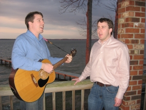

Story
Follow the text as you listen to the story.


 Two brothers, Jim and John, wanted to make some extra money. They had some ideas but decided to ask their parents for more ideas. Their mother said to their father, "They're good singers. Over there across the street is a restaurant. They could sing for their supper."
So the boys went to this restaurant and got a job singing on Saturday night. The customers liked their songs and soon there were large crowds. "They're young but they sing from the heart," people said. Eventually, their boss gave them a raise.
The boys shared their money with their family. Their proud parents said to each other, "They're great!"
Explanation
They're– a contraction for "they are."
Hint: Try substituting "they are." If the sentence still makes sense, you'll know what to use!
Examples: They're coming over for lunch today, and I'd better get ready.
Afterwards, they're hoping to go on tour.
They're the people who live on the corner.
Their– the possessive form for "they." Something belongs to them. The thing that is owned follows the "their."
Hint: The word "heir" is part of the word "their." An heir owns property after someone passes away. That helps you remember that "their" is about possession.
Examples: Their car was pulling into the driveway.
For lunch at the deli, I tried their ham sandwich.
Their hopes were dashed when the accident happened.
There– location, pointing out something, something exists.
Hint: The word "here" is part of the word "there." That helps you remember that "there" shows position and location. If "here" works, so will "there."
Examples: Over there is a house with red shutters.
There is a tavern in the town.
I'm going there to see if I can help.